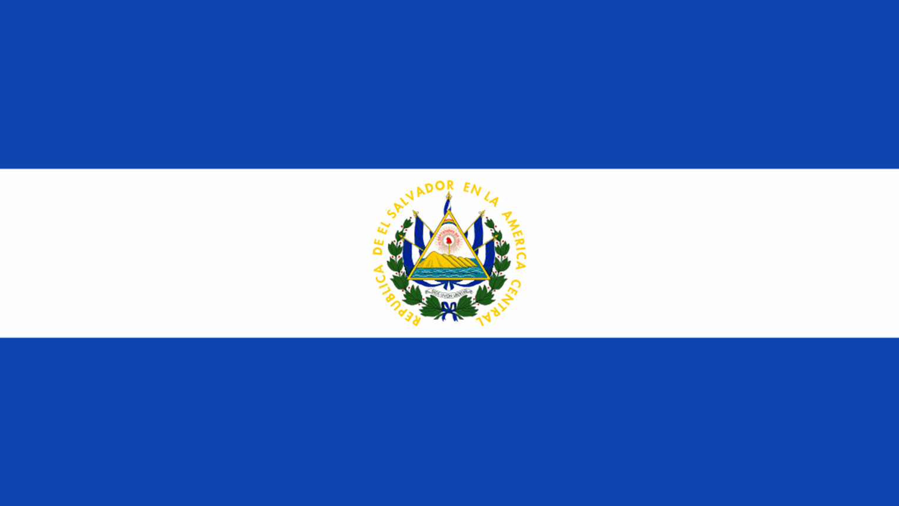

Introduction
Hello my name is Carlos and this is my page.
About Myself

- I was born in El Salvador than lived in Los Angeles, California for 2 years before finally moving here to Chicago.
- I am huge fan of soccer and my favorite team is Real Madrid.
- I have 3 younger brothers and one younger sister. I am currently dorming but at home I live with 2 of my younger brothers and my mom.
- For the most part I am more of a stay at home person but recently I have started to go out more and explore the city.
Hobbies

- Some of my favorite hobbies are drawing, reading, playing video games, and playing soccer.
- I like to draw charcters that I find intresting from animes that I have watched in the past.
- I also love spending time with friends and family.
Education
- I am currently a sceond year here at IIT majoring in information technology and managment.
- The high school that I attended is ITW David Speer Academy.
- in the future I also plan on getting a minor in phycology and hope to achive something that will help people or make an impact on the world.